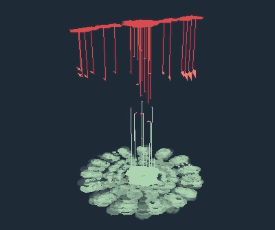

[Mo]tion[Vis]ualiser was developed during the 2015 Melbourne Choreographic Coding Lab, at the Deakin University/Motion.Lab motion capture stage. The page is an experiment in providing simplified or abstracted views on motion capture marker data, by allowing the user to define the view, style and level of detail that the data presents.
During the lab I had the opportunity to converse with choreographer Anouk van Dijk, creator of the Countertechnique method, and work with data that had been recorded of one of the skilled practitioners of Countertechnique, Niharika Senapati, performing a variety of movements based on the method. The visualization styles were influenced by this discussion, and also by collaboration with data visualization artist, Ri Liu.
In April a group of new media artists, performers and programmers gathered at the Deakin University Motion.Lab motion-capture facility in Melbourne, under the direction and guidance of Scott deLahunta and Florian Jenett of MotionBank, to explore the intersection of contemporary dance choreography and technology. This was the 2015 Melbourne Choreographic Coding Lab.
| Key | Action |
|---|---|
| space | stop and start playback |
| a | create path over the duration of the clip |
| b | creates brush strokes along the ground |
| c | creates a curve between the selected markers |
| g | toggles the grid visibility |
| k | show this dialog |
| m | toggles the marker visibility |
| o | open load dialog |
| s | hide/show marker selection |
| t | create trails from selected points |
| u | create "up" arrows |
| v | create "look-ahead" velocity vector arrows |
| x | step one frame forward in time |
| z | step one frame back in time |
| ` | remove all lines |
My initial thought was to try and implement a live data stream from the mocap system into the browser which, honestly, doesn’t seem like a sensible thing to do. But since I’m not burdened by an over-abundance of common-sense I thought I’d give it a bash. The team at Motion.Lab had written a Unity plugin that linked to the Motion Analysis streaming library and converted the stream into OSC messages. I wrote small websocket server in Go that read the OSC message stream and converted each OSC message into a websocket message. To test the theory I wrote a small python server that read a trc file (mocap marker data - translations only) and sent an OSC message per sample at the data’s sample rate. This worked surprisingly well.
Only problem was that the live feed from the stage was sending a distinct OSC message per marker axis, which quickly choked my setup. Given a bit more time, and a reconfiguration of how the Unity plugin translated the Motion Analysis stream into OSC messages, I’m confident we could have had in-browser visualization driven by a live stream from the mocap stage. However, time was better spent focussing on the visualization side so I opted to use pre-recorded .trc files and just work with those.
This is a screencast of the app as it was on the final day, prior to the little bit of housekeeping I did before putting it online.
Thanks to all participants for your inspiration and innovation
Special thanks to our Motion.Lab hosts: Kim Vincs, Jordan Beth Vincent, Daniel Skovli, Simeon Taylor & Peter Divers